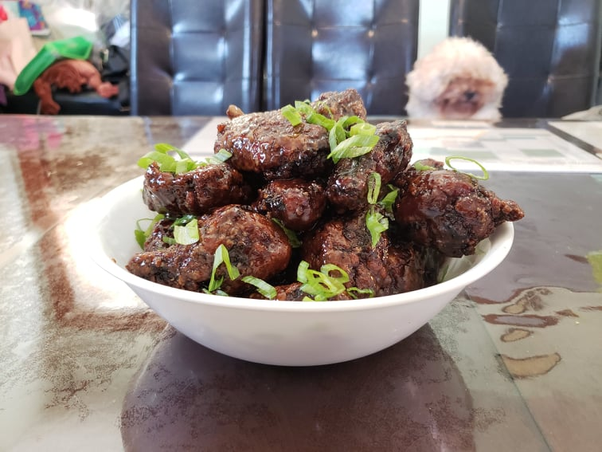

Dakgangjeong (Korean Fried Chicken)

Ingredients:
Fried Chicken:
- 2 lb Chicken wings
- 2 tbsp Mirin
- 1 tsp Salt
- 1/4 tsp Black pepper
- 1/4 tsp Ginger powder
- Optional: 1 tsp Garlic powder
- Optional: 1 tsp Onion powder
Soy Garlic Sauce:
- 1/2 cup Rice syrup or Honey
- 3 tbsp Soy sauce
- 2 tbsp Brown sugar
- 2 tsp Mirin
- 2 tsp Yellow mustard
- 2 tbsp Vegetable oil
- 3 cloves Garlic, thickly chopped
- 1 inch Ginger, sliced
- 3 Scallions, whites, chopped
- Optional: 8 Dried red chili peppers, optionally deseeded
Other Ingredients:
- Vegetable oil for frying
- 1/2 cup Potato starch
- 3 Scallions, greens, thinly sliced
- Optional: Dry roasted peanuts
Instructions:
- Combine the chicken ingredients and let marinade overnight.
- Before preparing the chicken, begin to heat 2 inches of oil in a pot to 340 degrees Fahrenheit. While the oil heats up, coat the chicken pieces one at a time in the potato starch.
- Deep-fry the chicken in batches, mixing lightly to avoid sticking, until all sides are light golden brown and crunchy, 8-10 minutes. As each batch finishes, transfer to a paper towel lined bowl to dry, then to a serving bowl.
- Let the chicken cool. While cooling begin to make the sauce. Combine the rice syrup/honey, soy sauce, brown sugar, mirin, and yellow mustard into a bowl.
- Heat a wok with the vegetable oil over medium high heat. Add the garlic, ginger, chili peppers, and scallion whites and stir for about 1 minute. Add the soy sauce mixture and stir until bubbling. Let it bubble until the mixture is sticky, about 2 to 3 minutes. Remove from the heat.
- Strain the deep-frying oil until mostly clean. Heat the oil back to 340 degrees Fahrenheit. Deep-fry the chicken for a second time, about 6-8 minutes. This can be done in one batch if it fits, as the chicken will no longer stick together. If using raw peanuts, they can be fried now for 15-30 seconds.
- Strain the garlic, chilis, scallions, and ginger from the sauce. Reheat the sauce over medium high until bubbling. Add the chicken and optional peanuts to the bubbling sauce and toss with a large spoon to coat nicely. Transfer to a serving bowl and garnish with scallions greens.